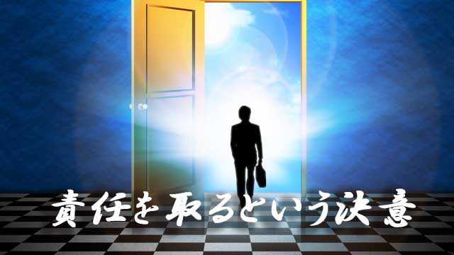

私は最近、色々なところで「責任を果すことの重要性」について触れているが、責任という言葉に多くの人は微妙な反応を示す。
これは「責任」という言葉のもつイメージが人々に何か重苦しい印象を与えているのかも知れない。
「責任を取らされる」「責任を取って辞職すべきだ」など、責任といえば世間では不祥事などで地位のある人が追及されたり謝罪させられる場面が脳裏に浮かぶのではないだろうか。
だから多くの人が「責任だけは取らされたくない」と身構えたり、責任を問わされそうな状況から逃げようとするのも仕方のないことかも知れない。
私の経験でも学校や役所など、どちらかというと「マイナス評価」で人を査定する世界では、責任を「取らされる恐怖」が蔓延していたように思う。（マイナス評価とは、何かをして失敗すると減点され何もしないとプラマイゼロ。すなわち失敗するくらいなら始めから何もしないほうが良いという風土を生みやすい）
今は、学校や役所だけでなく社会全体に「責任を取ることの恐れ」つまり失敗することへの恐怖が広がっているように見える。当然人々は物事に消極的になり、冒険や新しい試みに抵抗を示すようになる。
そこにもってきて、近ごろは「自己責任」という外国発の新しい概念が入り、ますます人は「自分の身は自分で守らねばならない」と戦々恐々とする時代になっている。
こうして今や責任とは恐怖を意味する単語になり、誰もが責任を取る立場（責任者）になりたくないと願う有り様になっていると感じる。
このように皆が責任を回避する社会とはどんな姿なのか。互いに責任をなすり合う組織や社会とは果して健全と言えるのか。活力のない衰退した社会になるのではないか。
だからといって私は「無責任は良くない」「責任ある行動をしよう」などと小学校の標語めいたことを言いたいのではない。
責任を果すとは、辞職したり「申し訳ありません」と頭を下げることではなく、もっと積極的で主体的なあり方創造的な行為だと言いたいのだ。
私の言う「責任」とは、外側へ向けてのもの―職務上の失敗や結果に対するもの―だけでなく人生全般に向けての内的あり方、すなわち生き方そのものに関わる姿勢のことである。
そして、驚くかも知れないが「責任を取る姿勢」のほうが人生は有利になるのだ。
責任を取ることで人生を自由に創造する
多くの人の予想に反して、日常生活においては責任を取ろうとしない生き方のほうがリスクは大きい。
なぜなら先にも言ったように「責任を取らない」は失敗を恐れているからであり、失敗を恐れる以上は何ら積極的な試みは行わない、つまり改善も進歩もないからその人の人生はどんどん狭く先細りになるからだ。
そして、さらに悪いことにはこういう人は不都合なことや嫌な出来事が起こると、すべてを他人や環境のせいにする（つまり責任を回避する）ため、その姿勢がさらなる不都合な現実を招き寄せるという悪循環にはまりやすい。
一方、人生で起こることに対し自ら責任を果そうとする人は概ね「問題と向き合う」人と言える。物事を他人事（ひとごと）と考えず自分事として捉え、そこから何かを学び取る人のことだ。こういう人は伸びる。
たとえそれが理不尽な出来事と思えたり、自分に責任はないと見える場合であっても「自分の身に起こった以上は何らかの責任がある」と考えて、そこから逃げずにきちんと向き合うのである。
こういう人は、意識的に「責任を果そう」とは考えていなくても人生の主人公として立派に責任を果しているといえる。
決して人のせいにせず、自分の人生に起こることはすべて守備範囲と考えるので結果的に他者の助けにもなっている。
だからプライベートも仕事もうまく行くし、他人からの信頼も得られますます充実した人生になって行く。
こうして見てくると、人生に責任を取ろうとしない人と積極的に責任を果そうとする人では大きな違いが生じることが分かる。
前者のほうがリスキーであり、後者のほうが幸せで有利な人生ということになる。
人生に責任を取ることは決して恐ろしいことではない。むしろ人生の主人公として積極的に自分の人生を自由に創造する力を発揮できるという意味において、創造者としての喜びと楽しさを味わえるのだ。
だから「人生で起こるあらゆることに責任を取る！」と決意すればいい。そうすると人生はたちまち好転するだろう。
責任を取るという決意は、自分こそが人生の創造者であり主体者であることを高らかに宣言したことになるからだ。
まさに「責任」こそ自由な創造への「扉」だったのである。